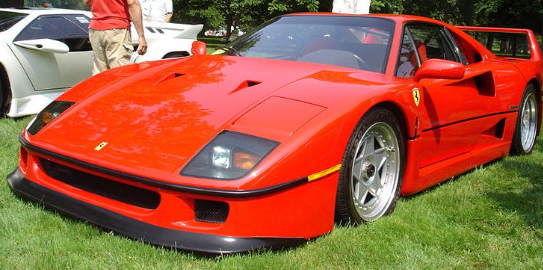

Ferrari F40 (ტიპი F120) არის შუაძრავიანი, უკანა ამძრავიანი სპორტული ავტომობილი[12], რომელიც შექმნილია ნიკოლა მატერაცის მიერ, პინინფარინას სტილით. იგი აშენდა 1987 წლიდან 1992 წლამდე, LM და GTE სარბოლო მანქანის ვერსიები აგრძელებდნენ წარმოებას შესაბამისად 1994 და 1996 წლამდე.[15] როგორც 288 GTO-ს მემკვიდრე (ასევე შემუშავებული მატერაცის მიერ), იგი შეიქმნა ფერარის 40 წლის იუბილეს აღსანიშნავად და იყო Ferrari-ს ბოლო ავტომობილი, რომელიც პირადად დაამტკიცა ენცო ფერარის მიერ.[1]იმ დროს ეს იყო Ferrari-ს ყველაზე სწრაფი, ყველაზე ძლიერი და ყველაზე ძვირადღირებული მანქანა გასაყიდად.[16] ავტომობილის დებიუტი იყო დაგეგმილი წარმოების სულ ოთხასი ერთეულით და ქარხნის მიერ შემოთავაზებული საცალო ფასი დაახლოებით 400,000 აშშ დოლარი იყო (მისი წინამორბედის, 288 GTO[17] ფასის ხუთჯერ) 1987 წელს (დღეს 1,070,000 აშშ დოლარი).ავტომობილის დებიუტი იყო დაგეგმილი წარმოების სულ ოთხასი ერთეულით და ქარხნის მიერ შემოთავაზებული საცალო ფასი დაახლოებით 400,000 აშშ დოლარი იყო (მისი წინამორბედის, 288 GTO[17] ფასის ხუთჯერ) 1987 წელს (დღეს 1,070,000 აშშ დოლარი) ავტომობილის დებიუტი იყო დაგეგმილი წარმოების სულ ოთხასი ერთეულით და ქარხნის მიერ შემოთავაზებული საცალო ფასი დაახლოებით 400,000 აშშ დოლარი იყო (მისი წინამორბედის, 288 GTO[17] ფასის ხუთჯერ) 1987 წელს (დღეს 1,070,000 აშშ დოლარი)
 back